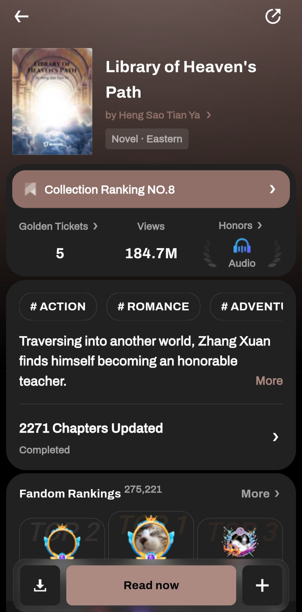
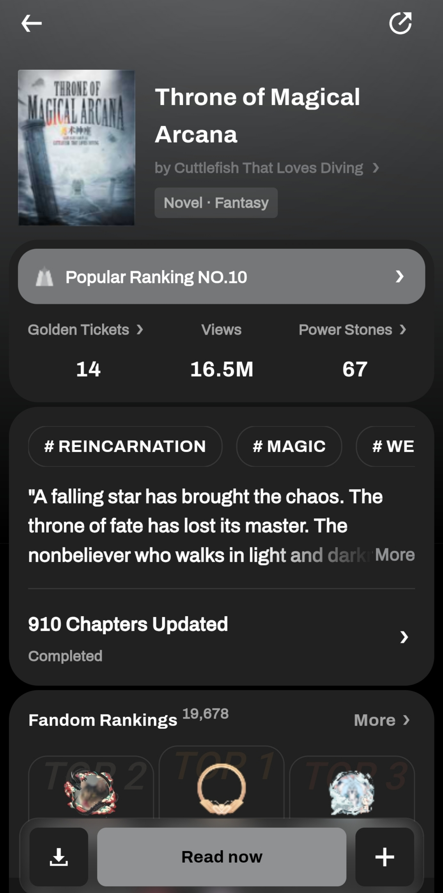

音楽
音楽を聴くのも、歌うのも好きです。
ジャンルとしては幅広く楽しんでいます。
- Pop
- JPop
- KPop
- Blue
- Rock
- R&B
- Country
最近、ハマっているジャンルは失恋ソングやBlueのジャンルです。
今年度、飽きないほど聴きまくっている曲は「THE 1975」の「ABOUT YOU」という曲です。
「ABOUT YOU」は、イギリスのバンド「THE 1975」が2022年のアルバム『Funny in a Foreign Language』で発表したドリーム・ポップの傑作です。 初期の代表曲「Robbers」の精神的続編とされ、かつての忘れられない恋愛を回想する切なくノスタルジックな世界観を描いています。シューゲイザー風の重厚なギターと美しいシンセサイザーが織りなす幻想的なサウンドに加え、終盤に響くポリー・マネーの儚げな女性ボーカルが深い余韻を残します。 そのエモーショナルな雰囲気からSNSでも世界的なバイラルヒットを記録し、今や新世代の彼らを代表する屈指の名曲として広く愛されています。
読書
読書は父親の影響で、幼いごろから拾ってきた趣味です。
当時は漫画が中心でしたが、年月とともにジャンルも広がり、
小説や実用書等を読むようになった。
大学生になった際、ライトノベルと出会い、従来までも飽きることなく、読み続けています。
好きなライトノベルのジャンルは
- 異世界
- 魔法使い
- システム系
- 国造り
ライトノベルを読むプラットフォームは主に「WebNovel」です。
以下は私からのおすすめのライトノベルです。（※注：英文書）

Library of Heaven's Path from WebNovel
概要
Traversing into another world, Zhang Xuan finds himself becoming an honorable teacher. Along with his transcension, a mysterious library appears in his mind. As long as it is something he has seen, regardless of whether it is a human or an object, a book on its weaknesses will be automatically compiled in the library. Thus, he becomes formidable. "Monarch Zhuoyang, why do you detest wearing your underwear so much? As an emperor, can't you pay a little more attention to your image?" "Fairy Linglong, you can always look for me if you find yourself unable to sleep at night. I am skilled in lullabies!" "And you, Demon Monarch Qiankun! Can you cut down on the garlic? Are you trying to kill me with that stench?" This is an incredible story about teachers and students, grooming and guiding the greatest experts in the world!

Library of Heaven's Path from WebNovel
概要
"A falling star has brought the chaos. The throne of fate has lost its master. The nonbeliever who walks in light and darkness will make his debut." In this magic world, knowledge is power.
感想
数学、科学を魔法中秋の異世界で、再現し、最強の魔法使いになった物語
超々おすすめのライトノベル